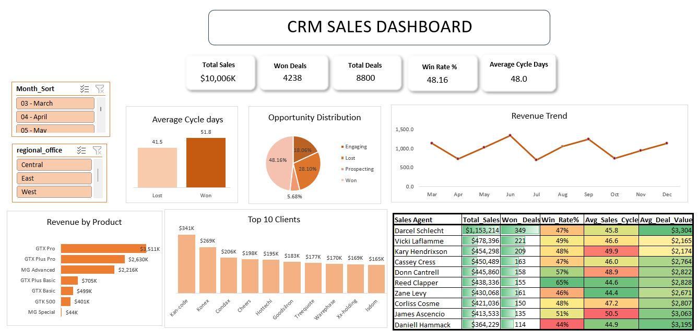

Ijaz
Power BI Developer | Data Analyst | BI Analyst
PL-300 certified data analytics professional focused on transforming
business data into interactive Power BI dashboards,
actionable insights and clear data stories.
My primary focus is Power BI, supported by
SQL for data extraction, transformation and analysis,
and Excel for exploratory analysis and reporting.
I enjoy — understanding
what happened, why it happened, where the business impact
is concentrated, and what areas may require further investigation.
✓ Microsoft Certified: Power BI Data Analyst Associate (PL-300)
Power BI Developer and Data Analyst
building hands-on business intelligence projects using real-world
datasets.
My work focuses on the complete analytical process:
understanding business questions, preparing data, building
analytical models, developing DAX measures, creating interactive
dashboards and communicating insights through data storytelling.
I am particularly interested in how BI dashboards can help
stakeholders move from a high-level KPI to the underlying drivers
of business performance.
I believe a Power BI dashboard should do more than display charts.
It should guide the user through a logical business story.
1. What happened?
Start with the most important KPIs and trends to establish the
current state of the business.
2. When did it happen?
Use time-based analysis and comparable periods to identify when
performance changed.
3. Where is the impact?
Drill into categories, products, customers, countries and cities
to identify where changes are concentrated.
4. What is driving the change?
Move from high-level KPIs into detailed analysis to investigate
the products, markets and customer behaviors associated with
the change.
5. What should be investigated next?
Translate findings into business implications and identify areas
where stakeholders may want to investigate further.
Power BI • SQL Server • Business Intelligence
🌍 Global Electronics Sales Analytics
An end-to-end analytics project investigating sales performance
across products, categories, customers and geographic markets.
Built with SQL Server and Power BI.
Key Highlights
- Analyzed year-over-year sales trends and a significant sales decline.
- Identified categories and products with the largest revenue reductions.
- Explored performance across regions, countries and cities.
- Reviewed customer metrics and profitability.
Tools & Techniques
SQL Server · Data Warehousing · Medallion Architecture ·
Star Schema · DAX · Power BI

View Project on GitHub →
Excel • Power Query • Power Pivot
📈 CRM Sales Pipeline Dashboard
Developed an interactive Excel dashboard to analyze sales pipeline
performance, revenue trends, product performance, sales agent
effectiveness, opportunity stages and sales cycle information.
Key Business Questions
- How is the sales pipeline performing?
- Which products generate the most revenue?
- How are sales agents performing?
- How are opportunities distributed across pipeline stages?
Tools & Techniques
Excel · Power Query · Power Pivot · DAX · PivotTables ·
PivotCharts · Slicers · Star Schema

View Project on GitHub →
Business Understanding
Start by understanding the business context and identifying
the questions that the analysis needs to answer.
Data Preparation
Clean, transform and validate the data before using it for
analysis.
Data Modeling
Build structured analytical models that support reliable
calculations and efficient reporting.
Analysis
Analyze trends, categories, products, customers and markets
to identify meaningful patterns.
Data Storytelling
Organize visuals so users can move naturally from
What happened? to
Why? and
Where should we investigate further?
Business Implications
Translate analytical findings into clear implications while
distinguishing observed evidence from assumptions or
recommendations.
I am currently seeking an entry-level opportunity as a
Power BI Developer, Business Intelligence Developer,
or Data Analyst.
I am particularly interested in roles where I can combine
Power BI, SQL and Excel to transform business data
into reliable analysis, interactive dashboards and decision-support
insights.
I am eager to continue developing my technical and analytical
capabilities while contributing to real-world Business Intelligence
projects.